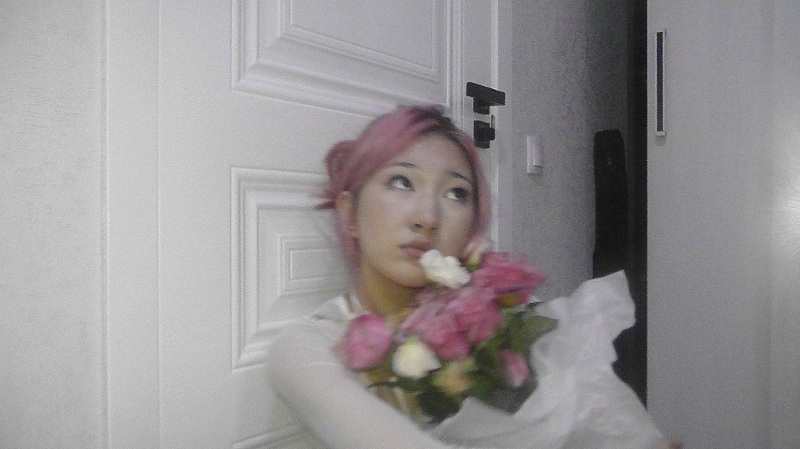

Beautifull girl
 «Красивые девушки» ( англ. Beautiful Girls) — фильм режиссёра Теда Демме с участием таких знаменитостей, как: Тимоти Хаттон, Ума Турман, Мэтт Диллон и других.Красивые девушки - американский романтический комедийно-драматический фильм 1996 года режиссера Теда Демме и сценариста Скотта Розенберга. Его история следует за нью-йоркским джазовым пианистом Вилли Конвеем, когда он возвращается в свой родной город Найтс-Ридж, штат Массачусетс, на встречу выпускников, где он обнаруживает, что его друзья оценивают свою жизнь и отношения.
Beatifull girl